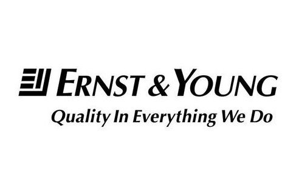

Resume — Updated April 2026
Florham Park, NJ · NYU Stern '26 · Pitt '25 · Incoming KPMG
M.S. Accounting
New York, NY · Sep 2025 – May 2026
B.S. Business Administration, Accounting · Minor in Economics
Pittsburgh, PA · Aug 2022 – May 2025
Credits transferred to University of Pittsburgh
Poughkeepsie, NY · Aug 2021 – May 2022
HL: Calculus Applications, English, European History · SL: Mandarin, ESS, Biology
Sep 2019 – Jun 2021
National Honor Society · Section Leader, Marching Band Trombone
Mendham, NJ · Aug 2017 – Jun 2021
Commercial Audit Associate (Incoming)
Morristown, NJ · Starting Fall 2026
Commercial Audit Intern
Short Hills, NJ · Jun – Aug 2025
Teaching Assistant — Introduction to Financial Accounting
Pittsburgh, PA · Aug 2024 – Apr 2025

Assurance Audit Intern
Pittsburgh, PA · Jun – Aug 2024
Endowment Operations Intern
Pittsburgh, PA · May 2023 – May 2024
Barista (Part-time)
New Jersey · Nov 2018 – Mar 2023
Self-employed
New Jersey · Mar 2018 – Sep 2022
Member · Pitt College of Business
Sep 2022 – Apr 2024
Member
Sep 2023 – Apr 2024
Sep 2022 – Apr 2023
Team Leader
Mar 2020 – Jun 2021
Volunteer — childhood illness fundraiser
Jan – Mar 2025